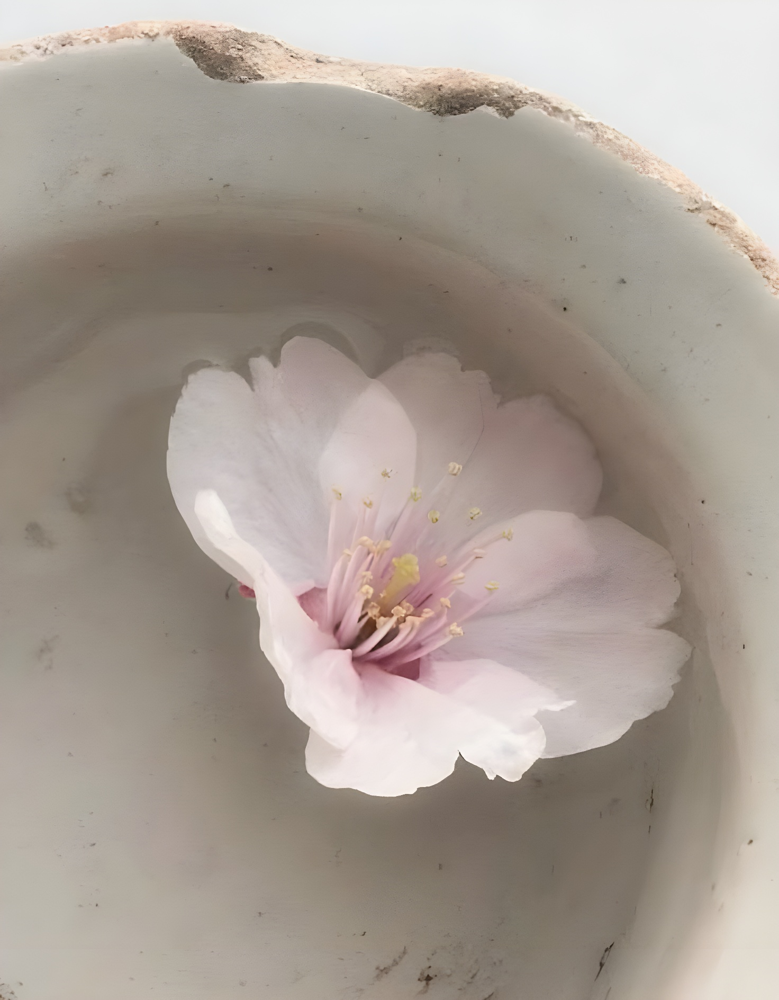

愛
愛
oh, hello there
you’ve just arrived, haven’t you?
standing out in the rain like that, won’t you get soaked?
i’ve just prepared some hot tea... do have a little, it will warm you up!
🍵
sit for a moment, the rain should ease up soon~

the library awaits